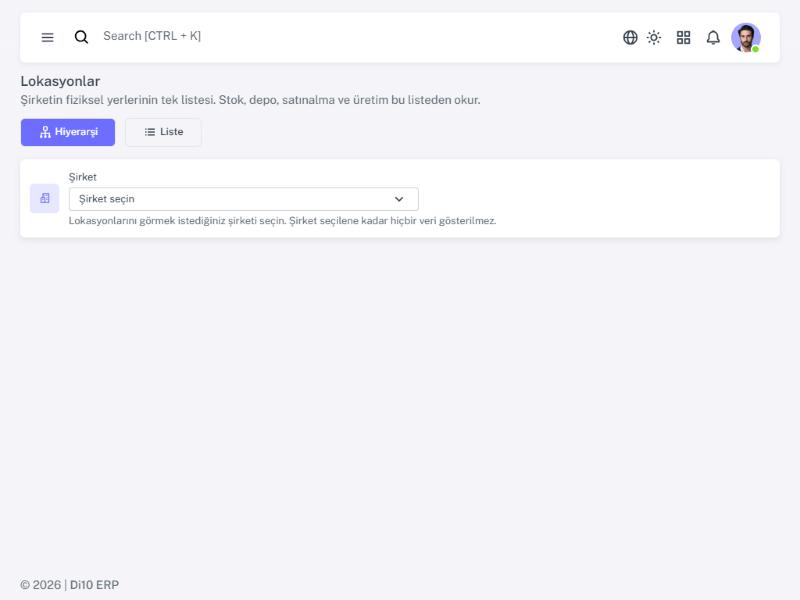
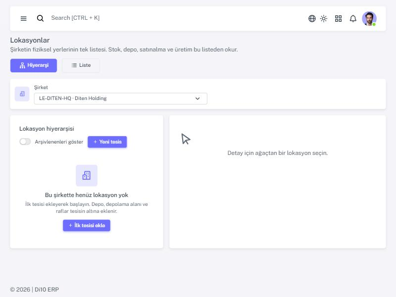
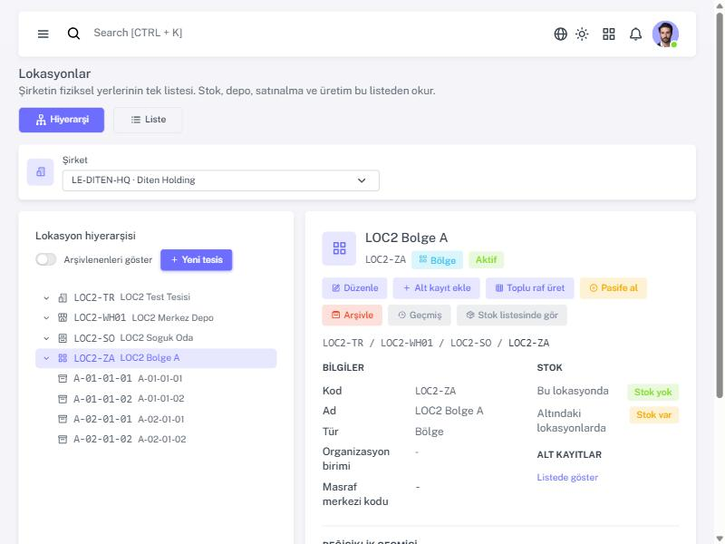
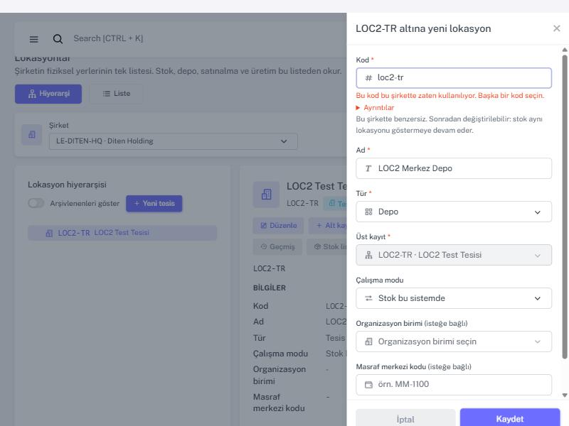
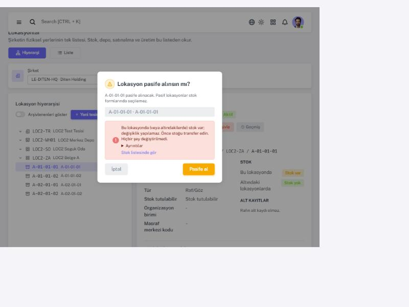
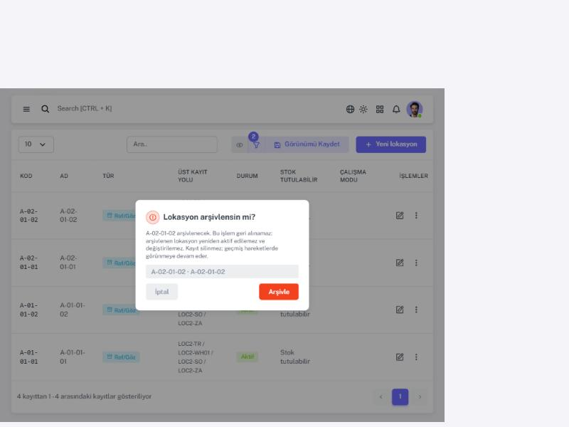
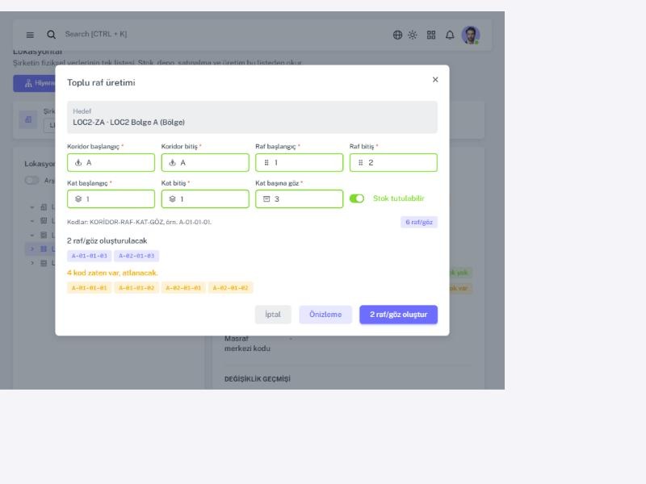
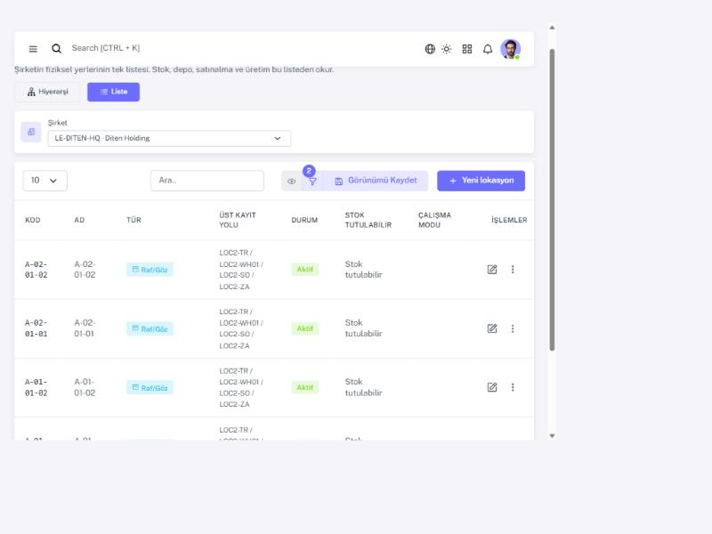
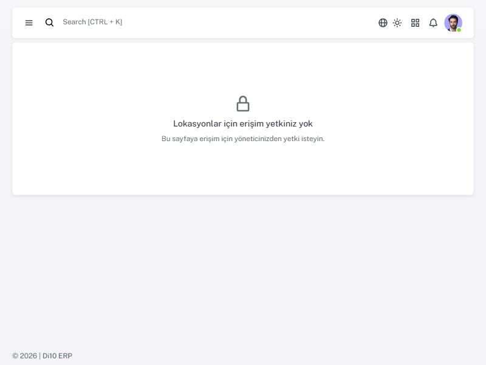

Lokasyonlar — Kullanıcı Kılavuzu
MOD-0173-FU02 · Lokasyon / Depolama Ana Verisi · ekranlar: /LocationTree (Hiyerarşi) ve /Locations (Liste).
Taslak (WP-0173-LOC2); kalıcı yeri docs/guides/inventory-locations/index.html (FU-LOC2-02).
1. Bu ekran ne işe yarar?
Şirketin fiziksel yerlerinin tek listesidir: Tesis → Depo → Depolama alanı → Bölge → Raf/Göz. Stok, depo, satınalma ve üretim bu listeden okur; kimse ikinci bir kopya tutmaz. Lokasyonlar silinmez; kullanılmayan bir yer pasife alınır ya da arşivlenir, geçmiş stok hareketleri onu göstermeye devam eder.
2. Başlarken: şirket seçimi
Hesabınız tek bir şirkete bağlı değilse önce sayfanın üstündeki Şirket kutusundan şirketi seçin. Şirket seçilene kadar hiçbir veri gösterilmez. Seçiminiz Stok Defteri ekranlarıyla ortaktır.

Şirkette henüz lokasyon yoksa ekran sizi ilk tesisi eklemeye davet eder.

3. Hiyerarşi ekranı (ağaç + detay)
- Soldaki ağaçta bir satıra tıklayın: detay sağda açılır, alt kayıtlar yüklenir. Klavye: ↑ ↓ gezinme, → aç, ← kapat, Enter seç.
- Detayda: kod, ad, tür, durum, tam yol, stok var/yok (miktar gösterilmez), alt kayıtlar ve değişiklik geçmişi.
- Arşivlenenleri göster anahtarı arşivdeki kayıtları da ağaca ekler.
- Bir kaydın altında 500'den fazla kayıt varsa ağaç onları çizmez; “Listede aç” ile Liste ekranına geçersiniz.

4. Yeni lokasyon, alt kayıt ve düzenleme
| Alan | Kural |
|---|---|
| Kod * | Şirket içinde benzersiz (büyük/küçük harf fark etmez), 1–40 karakter: harf, rakam, . _ / -. Sonradan değiştirilebilir; stok aynı lokasyonu göstermeye devam eder. |
| Ad * | 1–120 karakter. |
| Tür * | Yalnız oluştururken seçilir; sonradan değişmez. Üst kayda göre yalnız izin verilen türler listelenir. |
| Üst kayıt * | Tesis dışındaki her tür için zorunlu ve aktif olmalı. Raf, bölge olmadan doğrudan depolama alanı altına da bağlanabilir. |
| Stok tutulabilir | Yalnız Raf/Göz ve Depolama alanında. Üzerinde stok varken kapatılamaz. |
| Çalışma modu | Yalnız Tesis ve Depoda; altında stok varken değiştirilemez. |
| Organizasyon birimi / Masraf merkezi | İsteğe bağlı. Birim listesi okunamazsa alan boş bırakılıp kaydedilebilir. |
Şirket bir form alanı değildir: Tesis seçili şirkete ait olur, altındaki her şey onu miras alır.

5. Durum: aktife al, pasife al, arşivle
- Pasife al: lokasyon stok formlarında seçilemez. Üzerinde (veya altında) stok ya da aktif alt kayıt varsa izin verilmez.
- Aktife al: üst kaydı aktif değilse izin verilmez.
- Arşivle: geri alınamaz; arşivdeki kayıt yeniden aktif edilemez ve değiştirilemez.


6. Toplu raf üretimi
Bir Bölge ya da Depolama alanının detayında Toplu raf üret: koridor, raf, kat aralıklarını ve kat başına göz
sayısını girin. Kodlar KORİDOR-RAF-KAT-GÖZ biçimindedir (örn. A-01-01-01). Tek seferde en fazla 1000.
- Önizleme: hiçbir şey yazılmaz; oluşturulacak ve zaten var olan (atlanacak) kodlar listelenir.
- Oluştur: hepsi tek işlemde oluşturulur; çift tıklama ikinci bir parti üretmez.

7. Liste ekranı
Arama (kod veya ad), sıralama (kod, ad, tür, durum) ve filtreler (tür, durum, stok tutulabilir, üst kayıt). Satır menüsünde düzenle, alt kayıt ekle, durum işlemleri, geçmiş ve stok listesinde gör bulunur. Filtreleri “Görünümü Kaydet” ile varsayılan yapabilirsiniz.

8. Yetkiler
| Yetki | Ne sağlar |
|---|---|
inventory.locations.read | Her iki ekranı görme, geçmiş, stok var/yok. |
inventory.locations.manage | Oluşturma, düzenleme/taşıma, durum işlemleri, toplu raf. |
inventory.stock.read | “Stok listesinde gör” bağlantısı. |
Yetkisi olmayan kullanıcı ekranın iskeletini görmez; yalnız ne yapması gerektiğini söyleyen bir açıklama görür.
